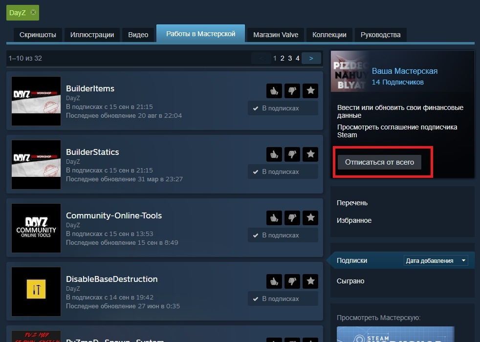
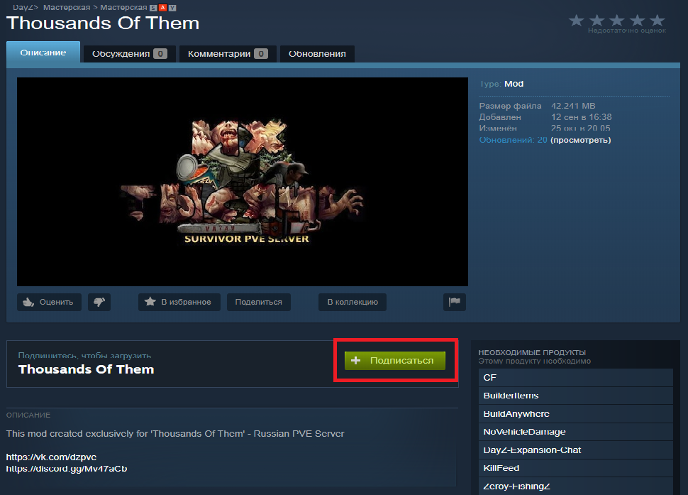
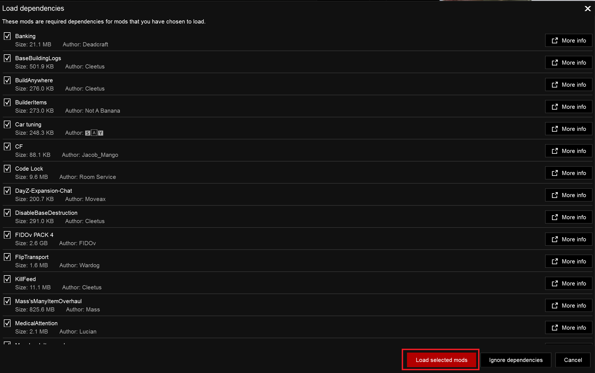
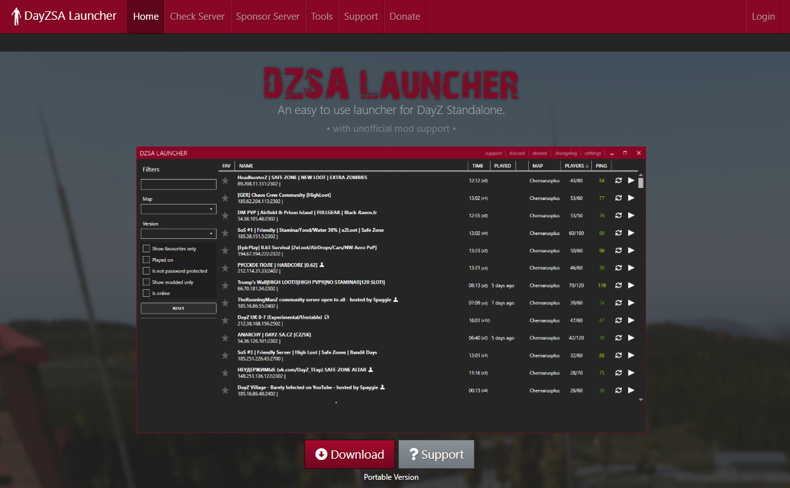
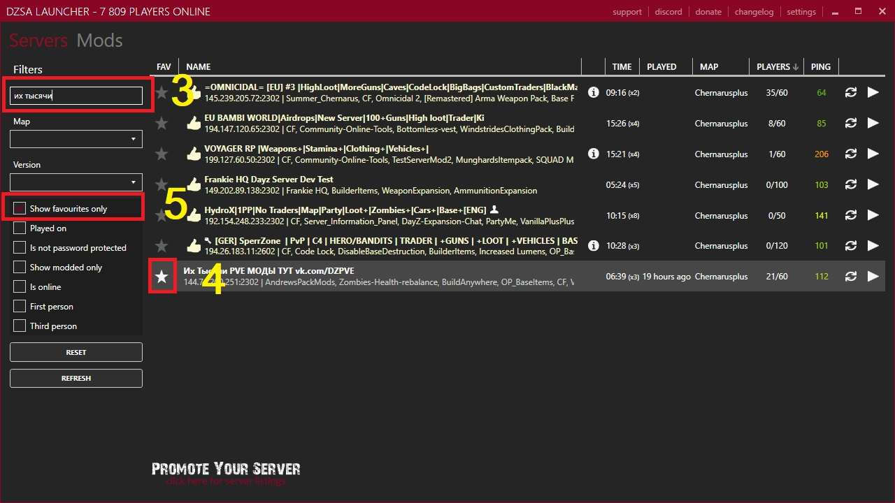
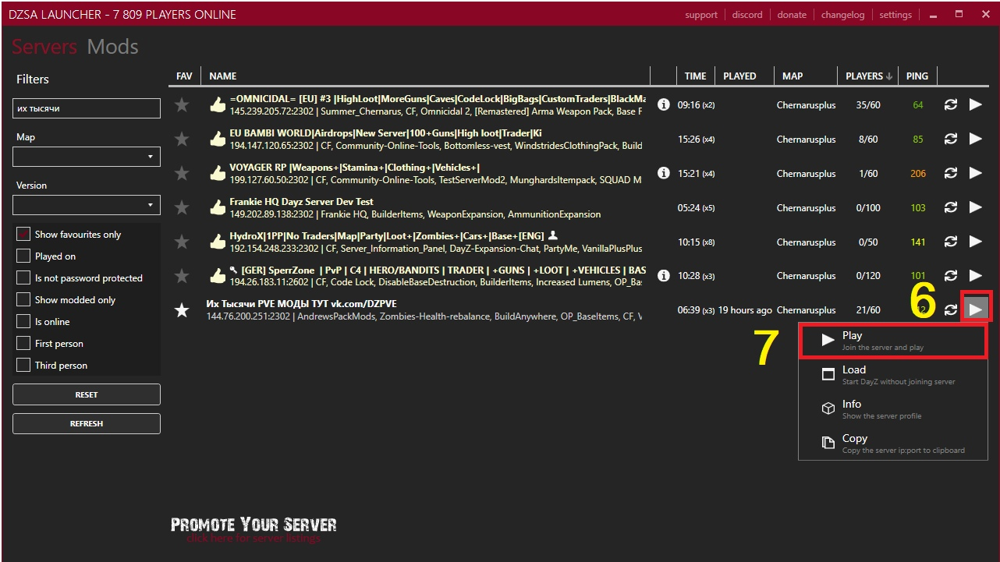

Как подключиться к серверу "Их тысячи"
Внимательно прочитав данную статью вы узнаете какими способами можно подключиться к игре на нашем сервере. Кроме того, вы узнаете как решить проблемы с ошибкой "Некорректная версия игры", т.к. в 99% случаев проблемы решаются методами описанными здесь, если иной способ не был озвучен Администрацией сервера в соответствующем канале Discord.
Задавая вопрос, ответ на который есть в данной статье, будьте готовы получить бан на 24 часа!
Способ первый - ванильный лаунчер DayZLauncher
- Ошибка "Некорректная версия игры" может возникнуть:
- при изменении состава модов на сервере "Их тысячи"
- при обновлении каких-то модов их авторами
- при отстуствии каких-то модов в вашем Steam (что-то не докачено)
- при загруженных в DayZLauncher лишних модов
- при первом подключении к серверу
На нашем сервере включена верификация состава модов, поэтому при отсутствии хотя бы одного компонента какого-то мода или наоборот при подключенном лишнем моде игра будет выдавать данную ошибку. На нашем сервере все моды обновляются автоматически, с задержкой около 10 минут от момента публикации мода в сети Steam
ВНИМАНИЕ: Если вы уверены, что все сделали правильно, как описано в даннной статье, но вас все равно не пускает с ошибкой "Некорректная версия", то возможно возникла очень редкая ситуация, когда у вас на компьютере уже новая версия мода, а на сервере она еще не обновилась. В этом случае просто подождите 10-15 минут и попробуйте снова, скорее всего на сервере мод уже также обновится.
Что делать-то?
- Внимательно выполняем по шагам, не пропуская ни одного:
- Выходим из игры. Совсем.
- Закрываем DayZLauncher
- Отписываемся от всех модов в Steam 
- Выходим из Steam или перезагружаем компьютер
- Заходим в Steam
- Подписываемся на наш МОДПАК И ВСЕ ЕГО ЗАВИСИМОСТИ, если это ссылка не открылась, то в поиске Steam набираем Thousands Of Them и проделываем то же самое 
- Ждем пока Steam закачает все зависимые моды
- Запускаем ванильный DayZLauncher и загружаем НАШ МОДПАК И ВСЕ ЕГО ЗАВИСИМОСТИ 
Всё. Подключаемся к серверу и играем.
Способ второй - сторонний DZSALauncher
Это универсальный способ. Он подходит большинству игроков, так как данный лаунчер сам все сделает и даст нужные команды Steam. Итак...
- Скачиваем DZSA Launcher или переходим по ссылке и нажимаем кнопку Download 
- Открываем лаунчер DZSALauncher
- Нажимаем кнопку "Settings" [1] в верхнем правом углу окна, откроется меню с настройками. В поле Ingame name [2] пишем свой ник, под которым вы будете играть на сервере:

- С левой стороны в поиске Filter пишем русскими буквами «их тысячи» [3], лаунчер отобразит наш сервер. Для того, чтобы его не потерять и не искать его постоянно, ставим звездочку перед имененем сервера [4], а затем ставим галочку в графе Show favourites only под поиском [5]. Эта функция показывает только сервера, которые вы помечаете звездочкой (в закладки) 
- После того как всё, что описано выше проделано, смело нажимаем на кнопку в виде треугольника [6], «выпадет меню» в котором нажимаем на «Play» [7] 
Всё. Мы молодцы. Наслаждаемся игрой.